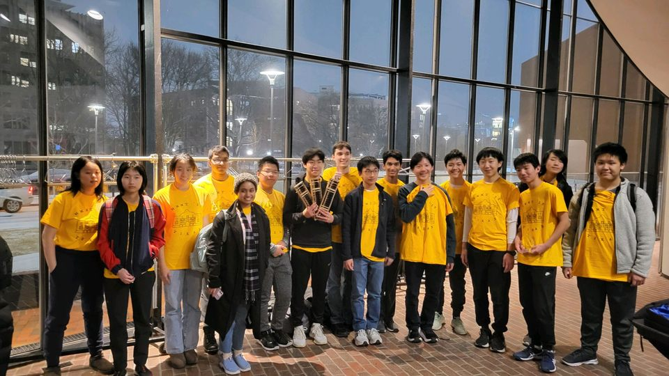

The Texas HMMT February 2025 Team
Texas Momentum A
Darren Han
Tarun Rapaka
Andrew Shen (Co-captain)
Alexander Sun
Channing Yang (Co-captain)
Leo Yu
Raymond Zhao
Lerchen Zhong
Texas Momentum B
Ekam Kaur
Jaeho Lee
Xinyi (Sophie) Li
Katherine Liu (Captain)
Rohan Pavuluri
Drake Tan
Emma Wu
Roger Zhen
Coaches and organizers
Matthew Kroesche
Andrew Shen
Channing Yang
Ted Cai
Individual results
Channing Yang placed 5th individually, 2nd in Algebra/Number Theory, and 4th in Geometry.
Andrew Shen placed 24th individually and 5th in Geometry.
Raymond Zhao placed 32nd individually, 47th in Algebra/Number Theory, and 19th in Geometry.
Lerchen Zhong placed 41st individually and 8th in Combinatorics.
Ekam Kaur placed 39th in Combinatorics.
Team results
Texas Momentum A placed 5th in Sweepstakes, 11th in Team Round, and 7th in Guts Round.
Texas Momentum B placed 18th in Sweepstakes, 14th in Team Round, and 33rd in Guts Round.
Team photo

(Back to Main Page)